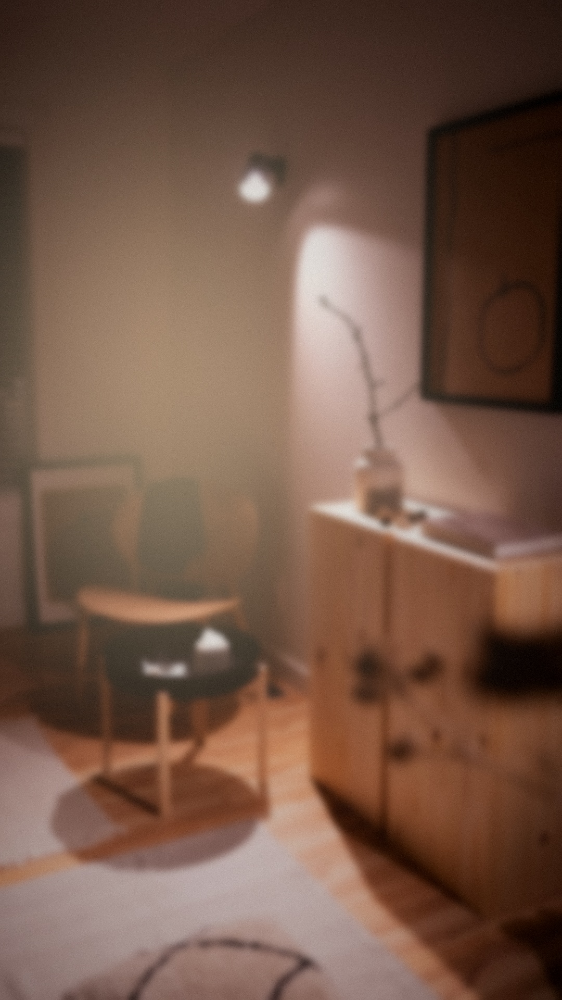

Noviembre de 2023
A una clienta se le prende fuego el auto.
Entre los restos queda un vaso.
Y adentro…
todavía hay hielo.
TikTok
Se me prendió fuego el auto… y mirá lo que sobrevivió

Pará.
Este video no lo pagó ninguna marca.
Lo filmó una clienta.
EP. 01 · HISTORIAS DE VENTAS
Días después
El presidente de Stanley le contesta por TikTok:
S
Presidente de Stanleyrespuesta en video
“Nos encantaría reponerte el auto.”
Antes, la publicidad la pagabas.
Hoy la filma tu cliente.
¿Tu producto le da a alguien algo para filmar?
Franco Valencia
historias de ventas
Seguime